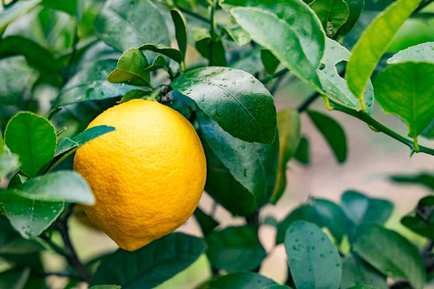
マイヤーレモン
主役だけど、でしゃばらない。
レモンとオレンジの自然交配で生まれた品種。酸味がまろやかで、料理の中でうまく脇役になれるレモンです。皮までおいしく使えます。10〜11月はグリーン（緑色は国産の証）、12〜1月はイエロー。
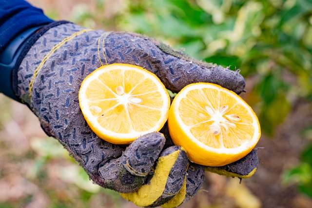
切ると、はちみつ色の果汁がたっぷり。
三重県・東紀州から
「食べものの中で、いちばん好きなのはレモンでした。」
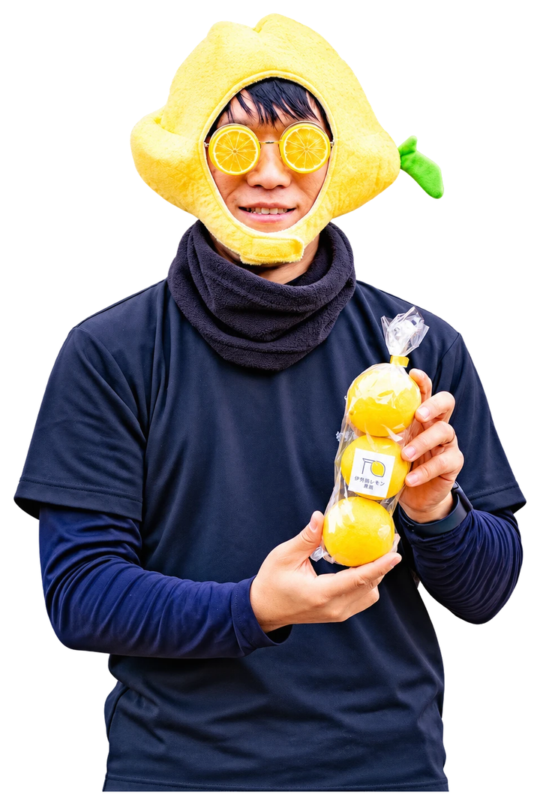
10.5レモンの日
販売開始
小学生の文集にそう書いた少年が、大人になって、
三重県紀北町でレモン農家になりました。
伊勢路レモン農園｜世界遺産・熊野古道「伊勢路」のふもと
個人のお客様のご購入も、飲食店・宿泊施設さまからのご相談も、どちらも歓迎です。
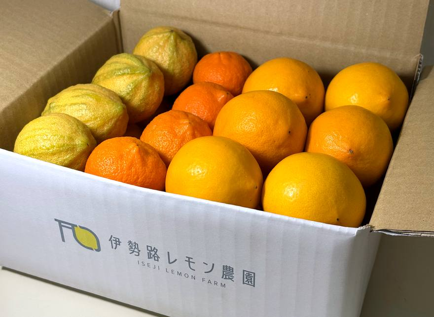
SALE START
10月5日は「レモンの日」。
今年の販売開始まで、あと — 日
まずはフレッシュな酸味のグリーンレモンから。12月にはやさしい甘みのイエローに変わり、
1月の完熟まで、季節ごとに違う顔を楽しめます。
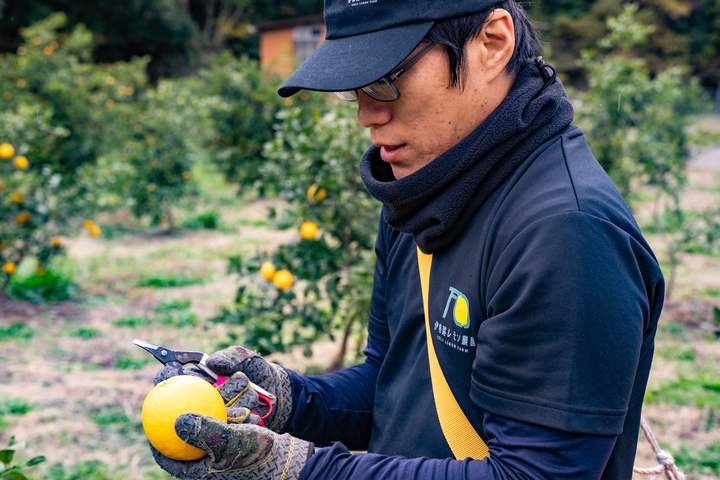
こんにちは。伊勢路レモン農園の氏原翔平です。
子どものころ、学校の文集に「いちばん好きな食べもの：レモン」と書いていました。ホテルで8年働いたあと、地元の三重県紀北町に戻り、レモン農家になりました。
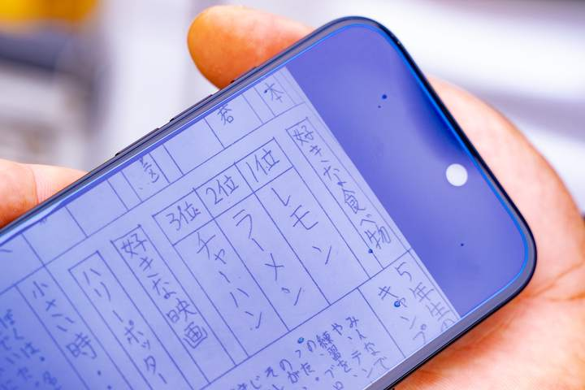
畑があるのは、伊勢と熊野を結ぶ世界遺産・熊野古道「伊勢路」のふもと。海と山が近いこの町の空気の中で、600本あまりのレモンの木を育てています。収穫後のワックスや防腐剤は使わず、皮まで楽しめるレモンを届けたいと思っています。
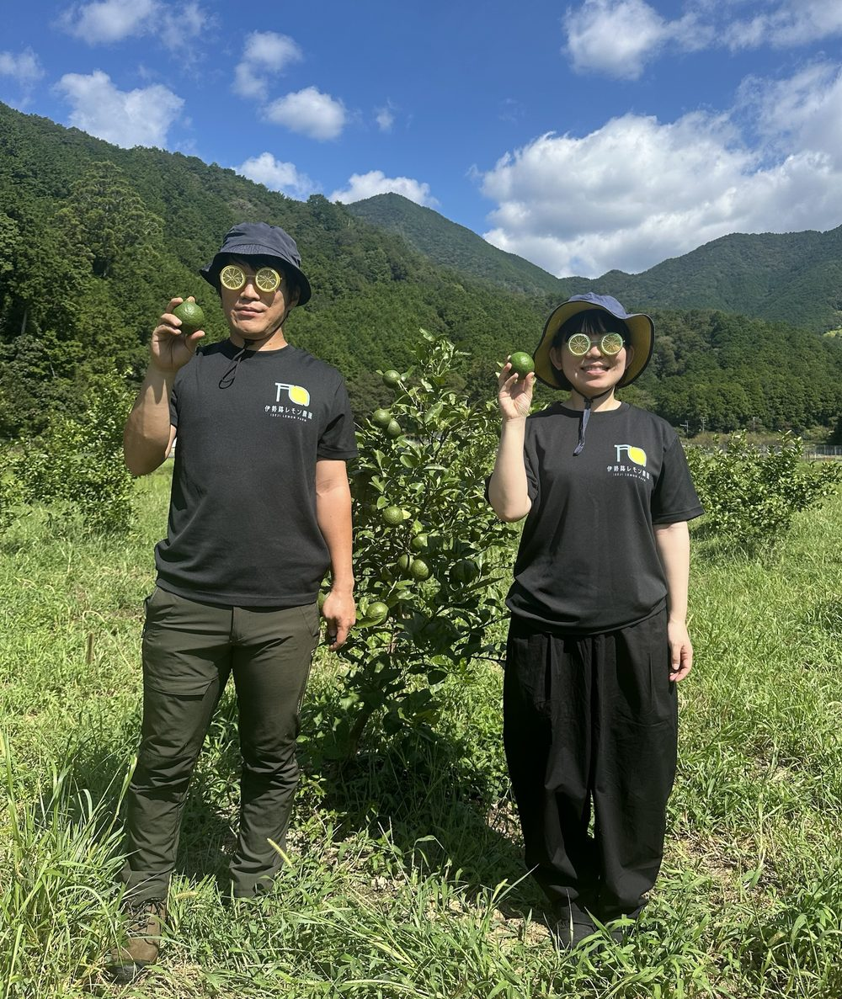
レモンを届けることは、紀北町を思い出してもらう入口にもなるはず。「三重にも、レモンの産地があるんだ」と、知ってもらえたら嬉しいです。
それぞれに、得意な料理と、いちばんおいしい季節があります。
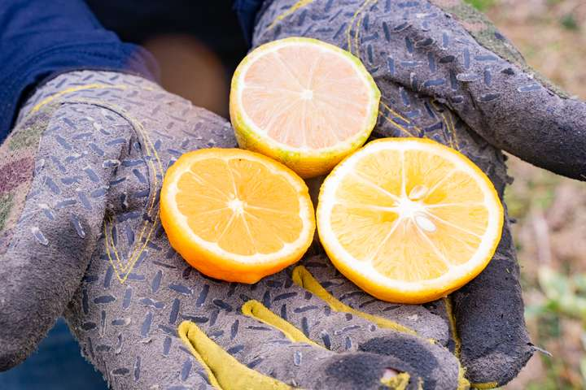

主役だけど、でしゃばらない。
レモンとオレンジの自然交配で生まれた品種。酸味がまろやかで、料理の中でうまく脇役になれるレモンです。皮までおいしく使えます。10〜11月はグリーン（緑色は国産の証）、12〜1月はイエロー。

切ると、はちみつ色の果汁がたっぷり。
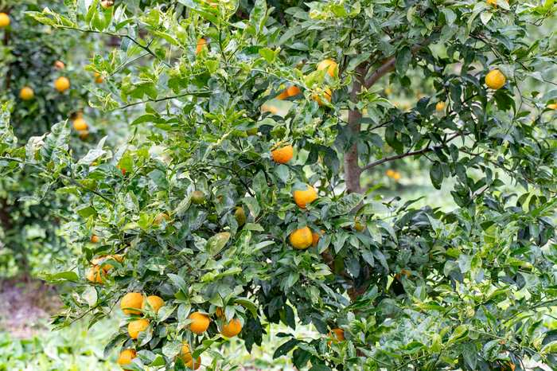
小さな実に、山椒のような香り。
すだちほどの小さなレモン。独特の香りは、カクテル、和食、エスニック料理の名脇役です。
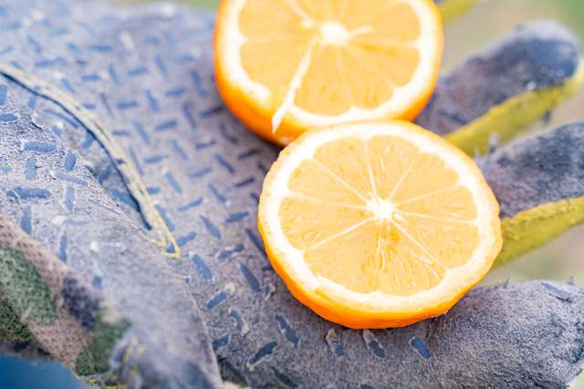
切ると、あざやかなオレンジ。
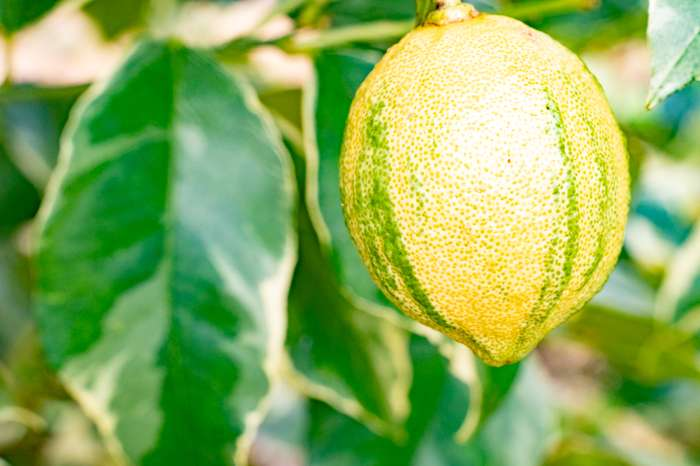
日本ではほとんど出会えないレモン。
果皮に緑のしま模様、果肉はほんのりピンク色。収穫できる数がとても少ない品種です。
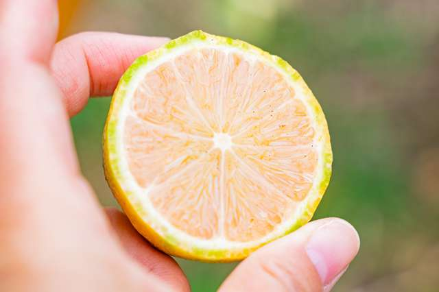
切ると、ほんのりピンク。
毎年数量限定・ご予約優先レシピや使い方は、LINEと農園便りで随時お届けしています。
鉢植えレモン、何をすればいいか迷っていませんか？現役レモン農家（園主）が、収穫まで伴走するアプリを作りました。
🍋 レモン育成ノート
iPhone / iPad / Mac(M1以降) / Vision Pro 対応・完全無料
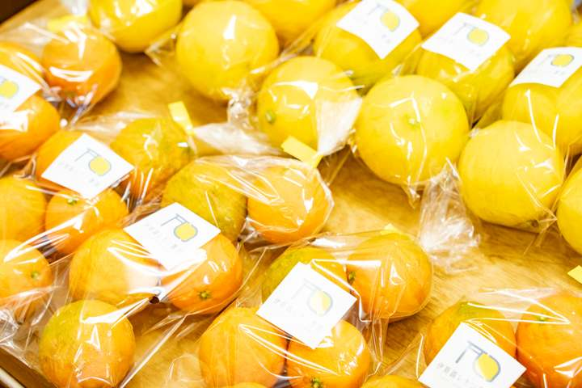
販売は10月5日開始。ご予約・先行のご案内は、公式LINEのお友だちに最初にお届けします。
LINE限定
傷や大きさふぞろいの「わけあり品」は、LINEのお友だちだけの限定販売です。
年末のギフト（化粧箱・のし対応）は、12月上旬締切を予定しています。3品種が箱をあけた瞬間に彩る、上の写真のようなギフト箱をご用意します。
飲食店・カフェ・菓子店・宿泊施設のみなさまへ
園主は元ホテルマンです。現場で使いやすい形・ロット・納品を、いっしょに考えます。
皮まで使えるマイヤーレモンは、ドリンク（グリーン期）からデザート（イエロー期）まで。姫レモン・ピンクレモネードは「よそにない一杯・一皿」の材料になります。生果のほか、マイヤーレモンの果汁とペースト（冷凍）は通年でお届けできます（果汁・ペーストはマイヤーレモンのみ）。
同じ紀北町のホテルでは、料理とドリンクで1シーズン100kg以上お使いいただいています。
初めてのお店には、用途や時期を伺ったうえで、サンプルをご案内できます。生果は収穫期（10〜1月）のお届けとなります。品種や数量は、その時期の収穫状況に合わせてご相談ください。
※「店名・ご住所・使ってみたいメニュー」を添えてご連絡ください。
レモンが緑から黄色に変わっていく様子、畑の日々、レシピの試作。収穫までの時間も一緒に楽しんでもらえたら嬉しいです。